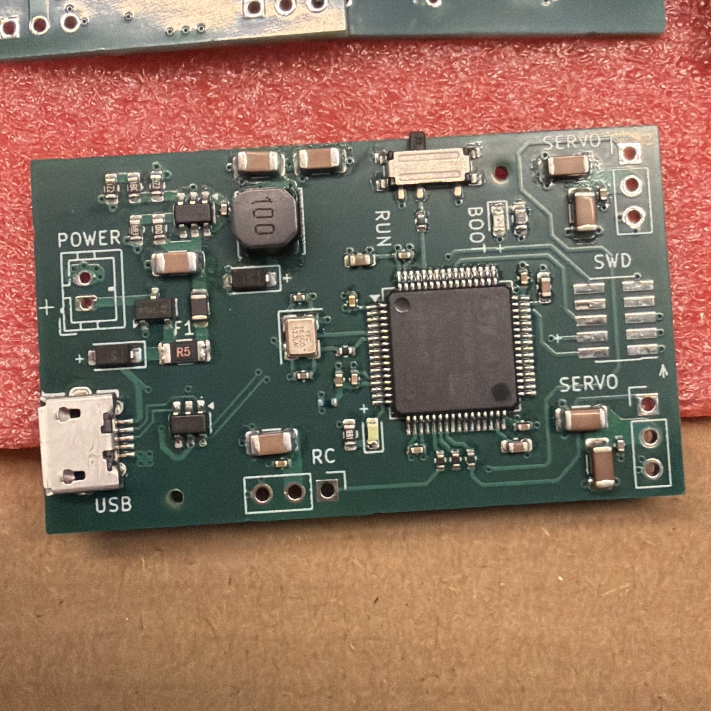

Prior to this project I always wanted to create some type of flying machine, whether that was a drone, RC plane or any other flying object. For a while I thought I was going to create a really cool smart drone that could autonomously fly, however as I did more research on it, I found out the cost of building a working one with features like a camera, sensors, AI, machine vision, etc, can get quite expensive. So I turned down the scope of the project into building something that can fly. While I have not fully delivered on this yet, I've created a great electronics base that could be used in real working frame for an ornithopter. The electronics is the star of the project in my eyes, as I designed an STM32 based flight controller and a simple but effective mini motor driver to drive the energy to make something fly.
The main star of the show is the STM32 based controller board. To be quite transparent the majority of the board is largely based on Phil's Lab STM32 board video with a buck convertor found here: KiCad STM32 + USB + Buck Converter PCB Design and JLCPCB Assembly. Without this guide I wouldn't have learned how to design PCBs with an STM32, nor how to work with one so big thank you to him. Aside from that here's some of the major components of this board:
Since the electronics part of this project was for my circuit analysis class' final project here is an html version of my techincal document: Ornithopter Technical Document if you are more curious about the details of how the controller board works.

The first initial mechanical prototype of the ornithopter was a butterfly style ornithopter that used two high-torque servos to control it's wings, the main insipiration for this was from this video Butterfly Ornithopter There were some issues however, the overall body and electronics together was too heavy to actually fly and I couldn't really implement code to control both servos because one of the servo pins on the controller board, unfortunately could not communicate with the STM32. Regardless here is a video of it being controlled:
The next best thing I could come up with was building a traditional RC ornithopter with a single motor. For this I was mainly inspired by the youtuber: 3JWINGS many of his ornithopter videos gave me an idea of how to make one, so big thank you to him. In order for this prototype to work I had to create a mini motor driver which simply uses an SMD N-channel MOSFET, diode, and resistor. I soldered this on a perfboard and cut it out, I learned of this simple yet elegant method from this video: Guide to making TINY Brushed Motor Drivers. Although this version is not as pretty as the first, it did flag way better, here is a video of it flapping:
Although I didn't make a fully working flying version of an ornithopter, I believe I have a great electronics base for future versions of an ornithopter. Overall, I learned a lot from this project, purely on the electronics alone, and I would still eventually like to make a fully working version!